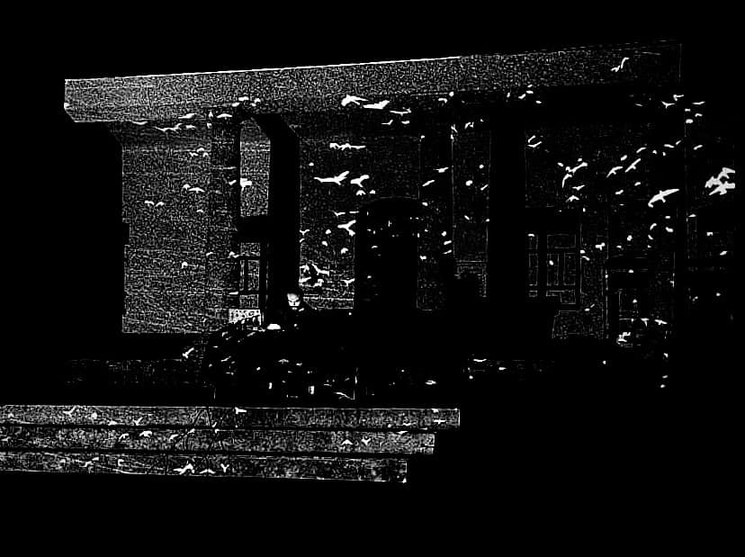

Alfonso Pretelt is a musician and audiovisual artist, specialized in sound and video art, studying at the University of Barcelona, and sonology at the Royal Conservatory of The Hague. He started in music with the piano and voice from the age of 7. He studied music theory and piano with the Russian teachers Irina Litvin, Irina Sachli and Dimitro Riesnik. (Autonomous University of Bucaramanga) he has studied electroacoustic composition with Alejandro Iglesias Rossi (Argentine), José Manuel Berenguer and Ricardo Mandolini. He has studied sound and video art with Barbara Held, Carmen Pardo and José Manuel Berenguer. He studied Sonology with: Joel Ryan, Peter Pabon, Kess Tasselar. (Europe) his studies in cinematography and psychology complement his vision of him as a creator and post-artist.
He is founder and director of Ideofónica, a platform for Latin American sound art and auralities. He is a web developer and content creator. He has been a teacher and workshop leader of sound art and video art in Bogotá Colombia, ASAB, Bogotá Planetarium, datasketch.
I have focused on acoustic research, experimental musical composition and audiovisual development. I promote deep listening experiences and decentralized education.
Programmer: from audio processing by code in contemporary music, I have reached frontend and backend web programming, strengthening the field of interactivity, data and creative programming.
Psychologist: After my studies in arts, music and sound, I have completed an undergraduate degree in psychology, seeking to enhance my perspective on the field of science or other holistic contexts. I strengthened my studies of tarot and psychomagic by collaborating with Jodorowsky as a musician and assistant in psychomagic theater in Argentina and Mexico 2013-2014.
Since 2011, his works, experimental shorts and videos have been presented in numerous festivals in Europe and Latin America and Asia. CV+  CV+